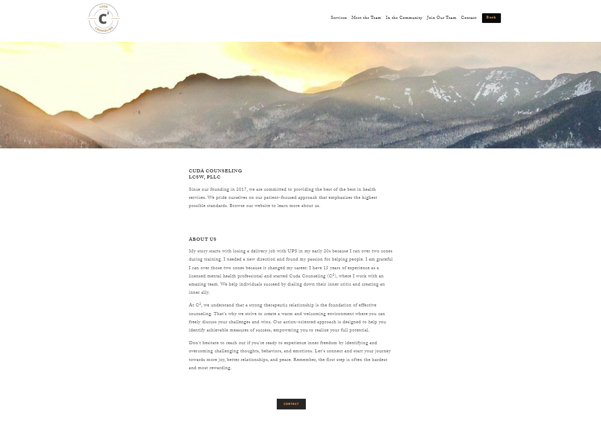

A mental health practice ready to grow.
Cuda Counseling LCSW, PLLC is a mental health practice founded in 2017 serving individuals, couples, and families across Herkimer, Rome, and online throughout New York and Florida. They offer individual counseling, EMDR therapy, substance abuse counseling, and more.
When I started working with them just over a year ago, the site was functional but underperforming organically. The design was dated, the technical foundation had gaps, there was no content strategy in place, and the site was not competing for the local search terms that matter most to a practice like this.
02 — The WorkMore than SEO. A full engagement.
This engagement covers more ground than a typical SEO project. Over the past year I have worked across four areas: a full website redesign, technical SEO, content strategy and implementation, and ongoing on-site optimization. Here is what that looked like in practice.
| Area | What was done |
|---|---|
| Website Redesign | Full homepage redesign with improved UX, clear service hierarchy, conversion-focused layout, and local SEO signals built into the page structure |
| Technical SEO | Crawl audit, indexing fixes, site architecture improvements, and analytics setup in GA4 and GSC |
| Content Strategy | New service pages targeting high-intent local queries, plus an ongoing blog covering mental health topics with SEO-informed keyword targeting |
| On-Site Optimization | Title tags, meta descriptions, internal linking, and keyword mapping across all pages |
Before and after.
The original site was a single-page layout with minimal hierarchy, no clear conversion path, and nothing optimized for local search. The redesign introduced a structured page architecture, service-specific pages, trust signals, clear calls to action, and a visual identity that better reflects the practice.


Organic performance, May 2026.
The data below is from a custom GA4 and Search Console report for May 2026, one year into the engagement. Organic search is now the dominant traffic channel at 61.57% of all sessions.
Organic Sessions — Monthly Growth
Monthly figures estimated from available data. May 2026 confirmed at 479 sessions YoY +125.9%.
Channel Mix — May 2026
GEO signal: In May 2026, Cuda Counseling received 4 sessions from ChatGPT referral traffic across three pages including the homepage, /all-services, and a blog post. This is an early but meaningful signal that the site is being surfaced by AI tools in response to mental health queries. As part of the ongoing engagement, I am actively working to strengthen this visibility through content structure, entity optimization, and monitoring AI referral sources as measurement tools improve.
What a year of work produces.
In May 2026, one year into the engagement, organic search drove 479 sessions, up 125.9% year over year. New users were up 89.5% and impressions grew 172.6%. The site is now surfacing for 582 queries including competitive local terms like "child therapists near me," "grief counselor near me," and "therapists near me."
Organic search is now the top traffic channel at 61.57% of all sessions. The /book page, which is the primary conversion destination, saw 100% MoM session growth in May. The blog is generating traffic with the progressive counting therapy piece driving a 400% MoM increase on that page.
This is what sustained SEO work looks like over time. Not a single fix but a compounding set of improvements across technical health, content, and optimization that builds month over month.
06 — Selected ContentThe blog work in practice.
A selection of posts written as part of the ongoing content strategy — each targeting search terms identified in keyword research and structured to support the site's broader topic authority in mental health and therapy services in Central New York.